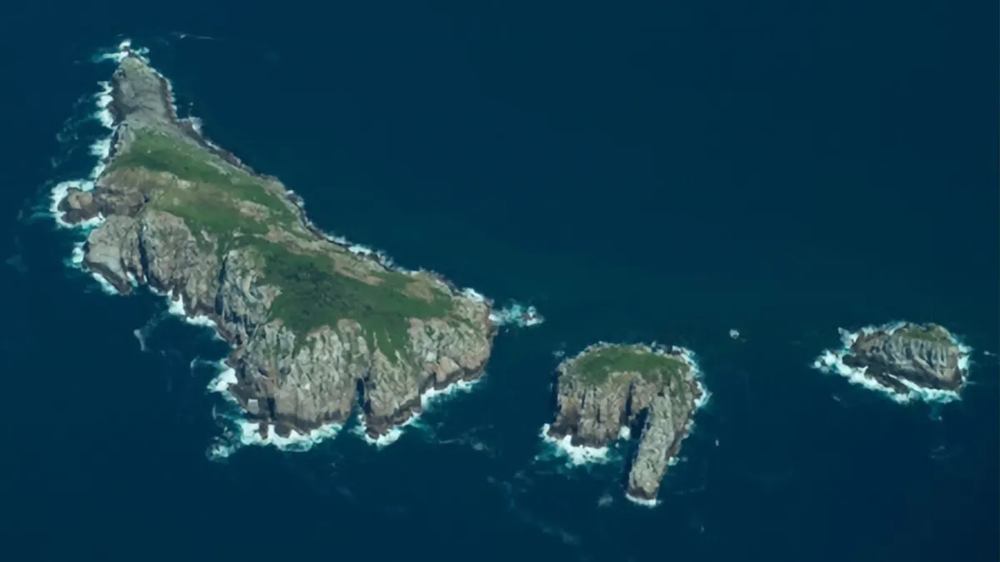

Pântano do SulTrês Irmãs · Moleques do Sul
Moleques do Sul e Três Irmãs
Saindo do costão do Pântano do Sul (15 min antes), Moleques do Sul soma três ilhas a ~12 km em mar aberto. O passeio contorna o arquipélago e a Ilha das Três Irmãs. Fotos reais na galeria.
- 4 horas de passeio (10,8 km)
- Horário combinado no agendamento
- Até 25 pessoas · mínimo de 8
R$ 200ida e volta por pessoa
Agendar